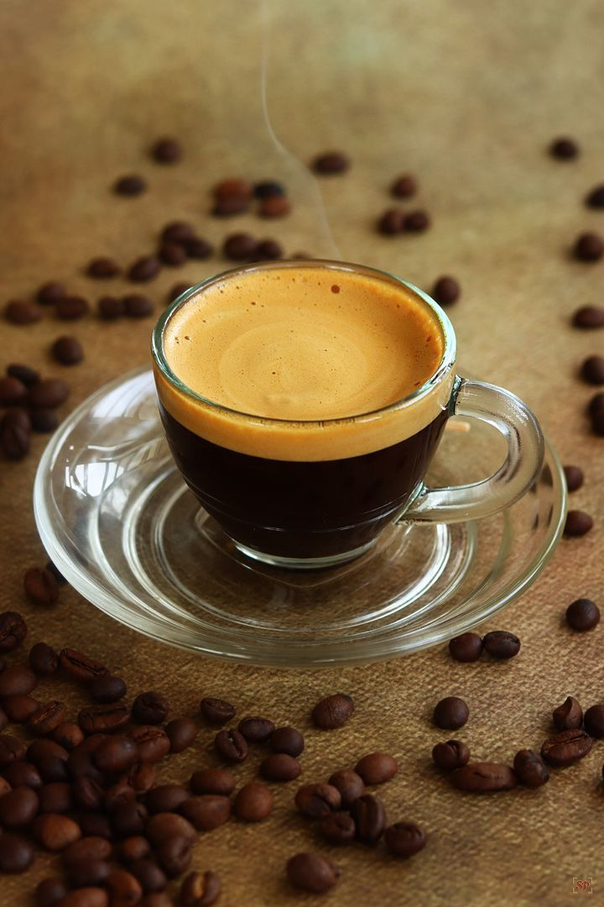
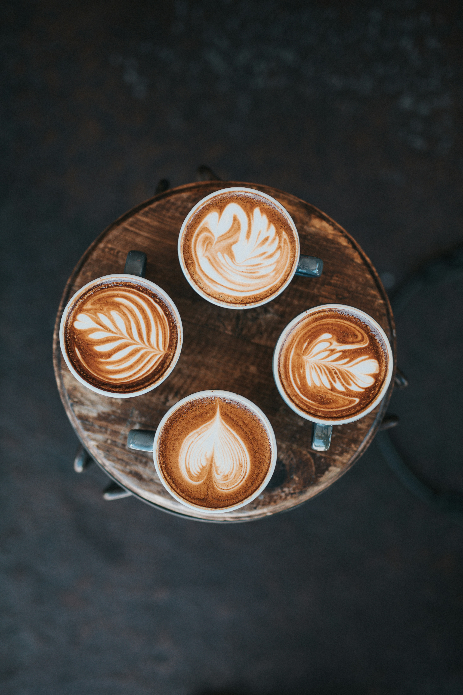
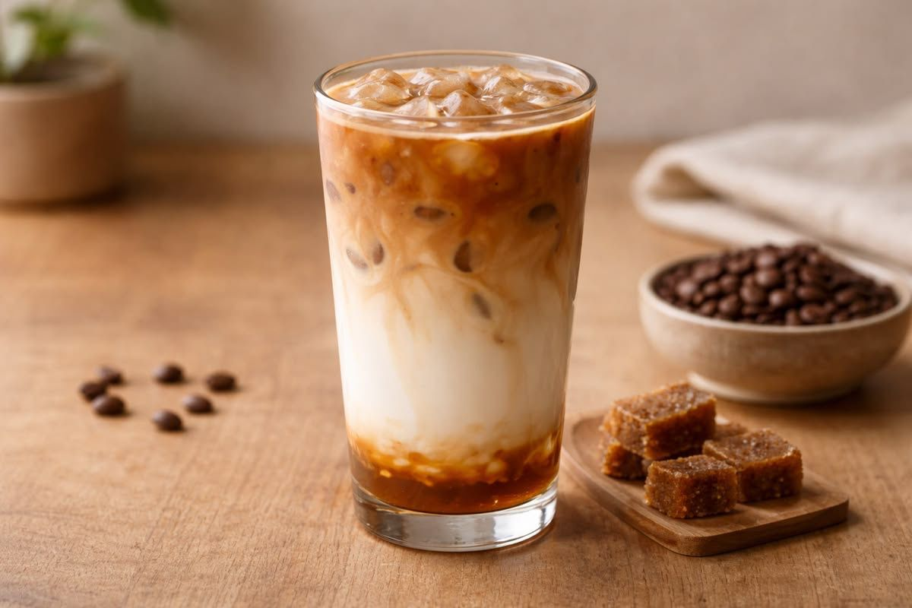

Kedai Kopi Nusantara menghadirkan pengalaman menikmati kopi lokal Indonesia dengan biji pilihan, racikan terbaik, dan suasana yang nyaman untuk bekerja, bersantai, maupun berkumpul bersama teman.
Kedai Kopi Nusantara hadir sebagai tempat ngopi yang nyaman di kawasan Medokan Ayu, Rungkut. Terletak di kawasan Rungkut yang tenang, Kedai Kopi Nusantara hadir sebagai tempat nyaman untuk menikmati kopi berkualitas jauh dari keramaian pusat kota.
Kami menggunakan biji kopi lokal pilihan dari petani Indonesia untuk menjaga kualitas, aroma, dan rasa yang konsisten di setiap sajian.
Kedai dirancang dengan suasana hangat dan nyaman, cocok untuk bekerja, belajar, maupun sekadar menikmati waktu santai.
Setiap cangkir diracik dengan teknik yang tepat agar karakter asli kopi tetap terasa dan memuaskan penikmat kopi.
Beberapa menu favorit pelanggan yang paling sering dipilih di Kedai Kopi Nusantara.

Sajian espresso pekat dengan cream halus, menghadirkan cita rasa kopi lokal yang autentik.
Rp9.000

Perpaduan espresso, susu steamed, dan foam lembut dengan rasa seimbang dan creamy.
Rp14.000

Menu favorit dengan rasa manis seimbang, creamy, dan tetap kaya karakter kopi.
Rp16.000
Kunjungi toko kami atau hubungi kami untuk informasi produk, pemesanan, dan kerja sama UMKM.